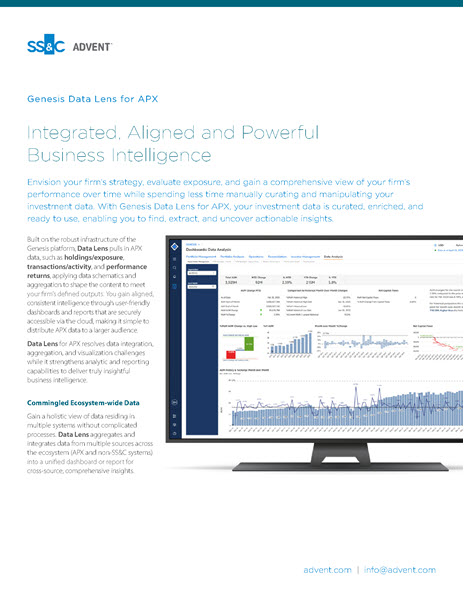
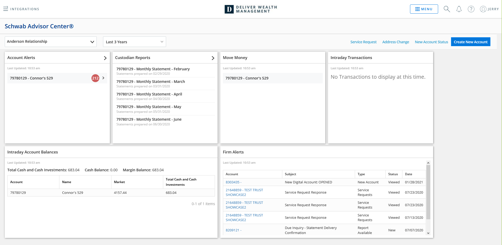

In a complex and competitive investment landscape, you need to be on top of your game. The right technology can stack the odds in your favor. Enter Advent Portfolio Exchange (APX): the world's first integrated client relationship management and portfolio management solution.
Part of the powerful Advent Investment Suite, APX connects your entire enterprise - front, middle, and back offices - on a single platform.
Simplify operations with a centralized, scalable platform for all your portfolio, relationship, and prospect data.
Envision your firm's strategy, evaluate exposure, and gain a comprehensive view of your firm's performance over time while spending less time manually curating and manipulating your investment data. With Genesis Data Lens for APX, your investment data is curated, enriched, and ready to use.
Built on the robust infrastructure of the Genesis platform, Data Lens pulls in APX data and transforms it into actionable insight through structured aggregation and visualization.
Data Lens for APX resolves data integration, aggregation, and visualization challenges while it strengthens analytic and reporting capabilities to deliver truly insightful business intelligence.
Gain a holistic view of data residing in multiple systems without complicated processes. Data Lens aggregates and integrates data from multiple sources across the ecosystem into a unified dashboard.
This ensures comprehensive insights across all your data sources. Built on the robust infrastructure of the Genesis platform, Data Lens pulls in APX data and transforms it into actionable insight.

You can generate and distribute internal reports without manual effort or inefficiency. Data Lens maintains schedules, automates recurring reports, and supports stakeholders' ad hoc analysis via managed data access layers.

Envision your firm's strategy, evaluate exposure, and gain a comprehensive view of your firm's performance over time. You can generate and distribute internal reports without manual effort or inefficiency. Data Lens automates recurring reports and supports internal stakeholders' ad hoc analysis.
In a complex and competitive investment landscape, you need to be on top of your game. The right technology can stack the odds in your favor. Enter Advent Portfolio Exchange (APX): the world's first integrated client relationship management and portfolio management solution.
Envision your firm's strategy, evaluate exposure, and gain a comprehensive view of your firm's performance over time while spending less time manually curating and manipulating your investment data. With Genesis Data Lens for APX, your investment data is curated, enriched, and ready to use.
Built on the robust infrastructure of the Genesis platform, Data Lens pulls in APX data and transforms it into actionable insight through structured aggregation and visualization.
Data Lens for APX resolves data integration, aggregation, and visualization challenges while it strengthens analytic and reporting capabilities to deliver truly insightful business intelligence.
Genesis' innovative architecture is powered by a unified data lake and data warehouse capable of storing any type of data. Our innovative, unifying data layer seamlessly integrates information across applications and functions, providing a single source of truth for stronger compliance, better informed decisions, and enhanced collaboration across teams.
Your front-office users can get a complete view of data from the portfolio accounting system of record (APX). Utilizing the latest technologies, Genesis offers added efficiency and accuracy to deliver faster, more comprehensive services and the underlying readiness for innovations to drive top-line growth.
This is another possibility for displaying content. Each box is clickable and will open a lightbox popup display.
Gain a holistic view of data residing in multiple systems without complicated processes. Data Lens aggregates and integrates data from multiple sources across the ecosystem into a unified dashboard. This ensures comprehensive insights across all your data sources. Built on the robust infrastructure of the Genesis platform, Data Lens pulls in APX data and transforms it into actionable insight.
Data Lens for APX resolves data integration and visualization challenges.